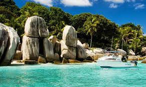

Народности
Численность населения — 806 153 человека (оценка на июль 2016 года), без учёта Майотты (Маоре), с ней — более 1 050 000 человек.
По данным переписи населения 2012 года, население страны составили 724 294 человека(без учёта Майотты (Маоре), с ней — около 936 900 человек).
Годовой прирост — 2,7 % (фертильность — 4,8 рождения на женщину).

Факты
Государство расположено на вулканическом архипелаге Коморских островов, включающем четыре главных острова.
Климат
Климат тропический, влажный и жаркий. Осадков от 1100 до 3000 мм в год. Верхние части склонов гор покрыты густыми тропическими лесами, ниже располагаются саванны и кустарниковые заросли. Круглый год существует опасность заражения малярией.